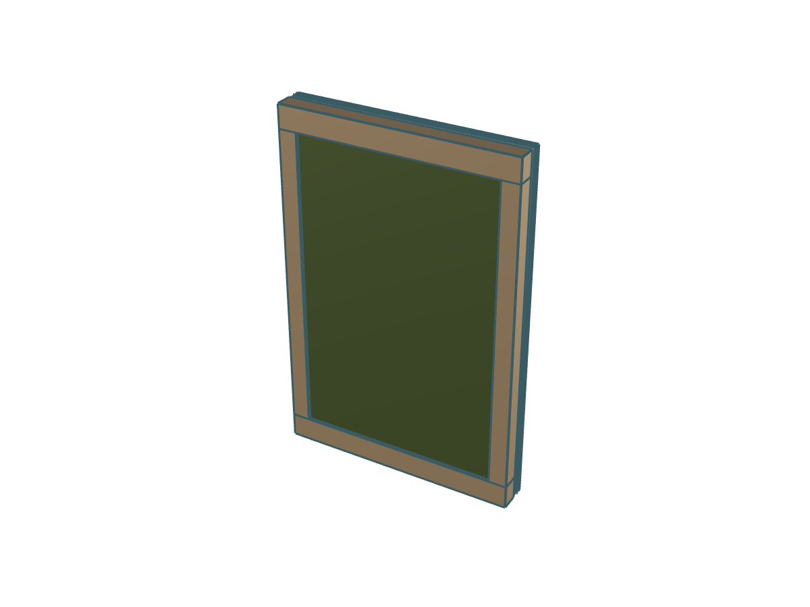
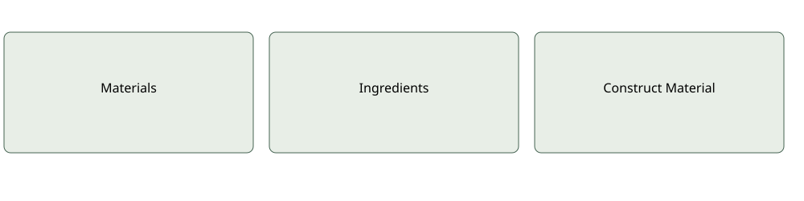

Development documentation · November 2026
Custom biomaterial

Connect
Materials → Ingredients → Construct Material → Element GWP
Author and interpret
Assign sources explicitly to rows. A connected material is available for selection, not automatically bound to every ingredient. Row quantities consume upstream declared outputs. Set a separate receiving output quantity and product state; never infer output from ingredient sum.
Coverage check
Inspect Result for units, supplier coverage, factor context and missing contributions. Available numerical impacts are not proof of scientific completeness.
Component contracts · Example status
